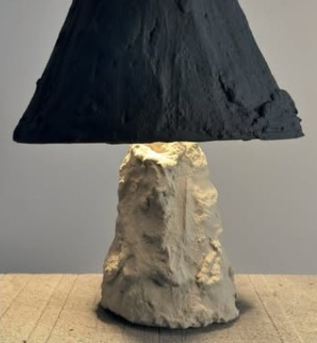
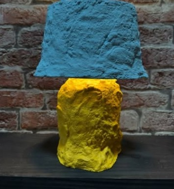
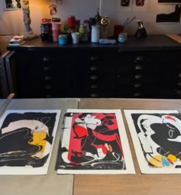

Enquire for availability and price.
Enquire about this workArtist working in silkscreen, sculpture and drawing.
Silkscreen prints, drawings and works on paper, photographed on the studio floor. Tap any piece to see it larger.
A drawn line becomes a screen, the screen becomes a print, and the print gets drawn into again.
Loose, fast drawing in pencil, pen and crayon.
Drawings are scanned, edited and split into colour layers.
Each layer is exposed onto its own silk screen.
Ink is pulled through, one colour at a time.
Prints are worked back into with collage and drawing.
Collins' screenprint Gathering of Strangers (2018) is held in the University of Salford Art Collection. Made for PRINT UnLtd, it began with discarded drawings collected from Manchester art supply shops, screenprinted, drawn into, cut into strips and rearranged.


Hand-built sculptural lamps with heavy, textured surfaces, made alongside the prints.
Ask about objects
For availability, prices, commissions and exhibitions, send a message with the piece you're interested in.
Message Joey →Enquire for availability and price.
Enquire about this work